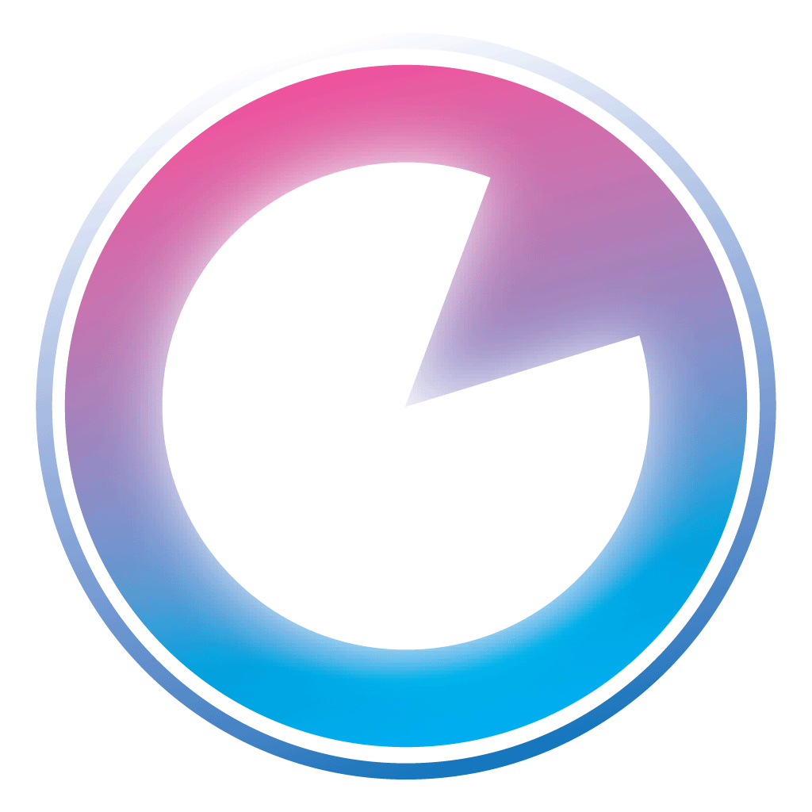

❤️ Applications

Tadpole Cipher
Outil de chiffrement tactique hors-ligne pour protéger vos communications contre l'analyse tierce et l'intelligence artificielle. Disponible sur Android
Consulter le dossier FR →English Documentation →
🎥 Galerie Média & Démo →

Chrony Fit (WIP)
Chrony Fit est une application de chronométrage sportif intuitive, dynamique et visuellement immersive.Conçue pour les entraînements fractionnés (HIIT, Tabata, Crossfit, Musculation), elle offre une interface fluide sublimée par des arrière-plans animés réactifs générés par des shaders GLSL personnalisés. Disponible bientôt sur Android
Consulter le dossier FR →English Documentation →
🎥 Galerie Média & Démo →
Beatstakk
BeatStakk : La Groovebox de poche ultra-puissante pour capturer votre inspiration...
Consulter le dossier FR →English Documentation →
🎥 Galerie Média & Démo →